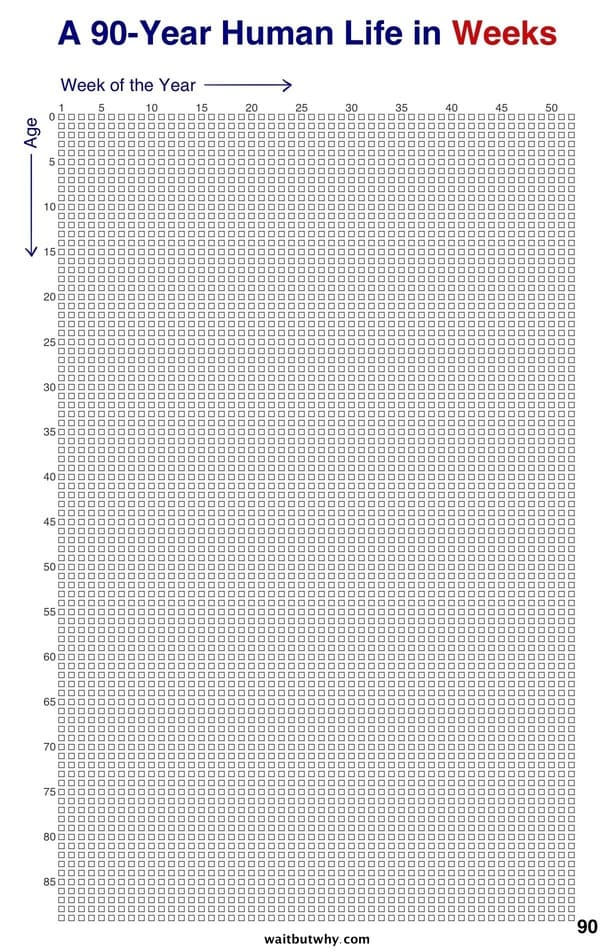
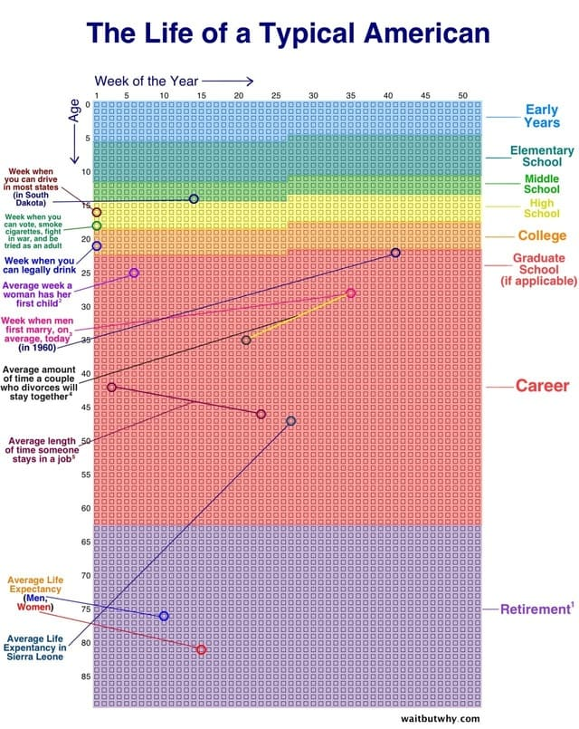

Sua vida em semanas
Quem me conhece sabe o quanto a dimessão tempo me fascina e assusta. Talvez seja por isso que meus filmes favoritos sejam a trilogia "De Volta Para o Futuro". Enfim, pra mim é meio estranho saber que esse exato segunto já acabou e não vai mais voltar. Por outro lado é incrível pensar que todos nós temos as mesmas 24h no dia, nem uma fração de segundo a mais ou a menos.
Nesse contexto, eu fiquei admirado com a palestra "Inside the mind of a master procrastinator" de Tim Urban no TED. Depois disso, ao acessar seu site e ler a postagem completa, um trecho em especial me prendeu a atenção:
"Às vezes a vida parece muito curta e outras vezes parece impossivelmente longa. Mas este gráfico ajuda a enfatizar que é certamente finito. Essas são as suas semanas e são tudo que você tem."

